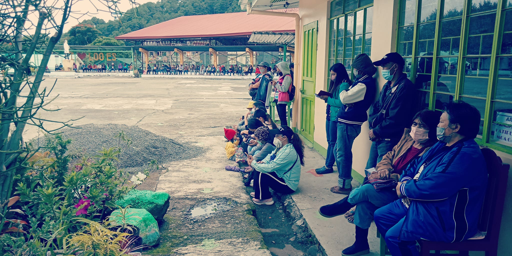

An Unconventional Journey: My Elementary Days at Loo Elementary School
My elementary education at Loo Elementary School followed an unconventional path, marked by multiple transitions and challenges that shaped my early academic journey.
A Pattern of Interruptions
My elementary years were characterized by a series of unusual circumstances:
- Dropped out of 2nd grade but still advanced to 3rd grade
- Dropped out of 3rd grade but progressed to 4th grade
- Dropped out of 4th grade yet moved on to 5th grade
This pattern was made possible because my mother, a teacher at the school, arranged for me to complete assignments at home rather than attend classes regularly.
The Breaking Point
In 5th grade, bullying became severe enough that I completely dropped out and had to repeat the grade the following year. During this period, I transferred to Sonshine Learning Center, a private school in our area, before eventually returning to Loo Elementary School for 6th grade.
This unconventional path through elementary school taught me resilience and adaptability, qualities that would serve me well in my later academic pursuits.